Next: แบบจำลองมาร์คอฟที่คำนึงถึงผลกระทบจากความคุ้มครองจากความเสียหาย
Up: แบบจำลองมาร์คอฟ
Previous: กล่าวนำ
Contents
Index
แบบจำลองมาร์คอฟของระบบ TMR
องค์ประกอบสำคัญสองประการของแบบจำลองมาร์คอฟ คือ สถานะระบบ และการเปลี่ยนสถานะ สถานะของระบบแสดงถึงสภาวะทั้งหมด ที่สามารถเกิดขึ้นได้ในเวลาใดๆ สำหรับการหาค่าความน่าจะเป็น สถานะของแบบจำลองมาร์คอฟ แสดงถึงสถานะต่างๆ ของระบบประกอบด้วยอุปกรณ์ที่ทำงานปกติ และเสียหาย
ในระบบ TMR, แสดงในรูป 12.1, ประกอบด้วยคอมพิวเตอร์สามเครื่องที่เหมือนกัน และทำการใช้การโหวต หาเสียงส่วนใหญ่การตัดสินใจ เรานิยามสถานะของระบบ
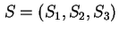 โดยที่ 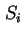 เท่ากับ  ถ้าระบบ
ถ้าระบบ  ทำงานอย่างปกติ และ เท่ากับ 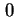 ถ้าระบบ มีความเสียหาย จากการกำหนดสถานะดังกล่าว แบบจำลองมาร์คอฟของระบบ TMR จะประกอบด้วย 8 สถานะ ได้แก่ 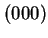, 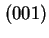, 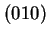, 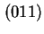, 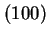, 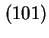, 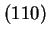, และ 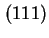 แต่ละหลักของสถานะแสดงถึงสถานะภาพของโมดูลว่าทำงานได้ หรือเสียหาย ในระบบ TMR เราต้องการสองโมดูลจากสามโมดูล ระบบจึงจะสามารถทำงานได้อย่างถูกต้อง ดังนั้นสถานะ , , , และ จึงเป็นกลุ่มของสถานะที่ระบบไม่สามารถทำงานได้ และสถานะ , , , และ เป็นกลุ่มของสถานะที่ระบบทำงานได้อย่างถูกต้อง
ทำงานอย่างปกติ และ เท่ากับ 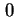 ถ้าระบบ มีความเสียหาย จากการกำหนดสถานะดังกล่าว แบบจำลองมาร์คอฟของระบบ TMR จะประกอบด้วย 8 สถานะ ได้แก่ 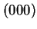, 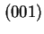, 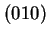, 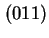, 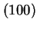, 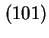, 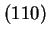, และ 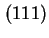 แต่ละหลักของสถานะแสดงถึงสถานะภาพของโมดูลว่าทำงานได้ หรือเสียหาย ในระบบ TMR เราต้องการสองโมดูลจากสามโมดูล ระบบจึงจะสามารถทำงานได้อย่างถูกต้อง ดังนั้นสถานะ , , , และ จึงเป็นกลุ่มของสถานะที่ระบบไม่สามารถทำงานได้ และสถานะ , , , และ เป็นกลุ่มของสถานะที่ระบบทำงานได้อย่างถูกต้อง
Figure 12.1:
ระบบคงทนต่อความเสียหาย 2 ใน 3 TMR
|
|
การเปลี่ยนสถานะกำหนดการเปลี่ยนแปลงของสถานะในแบบจำลองมาร์คอฟ เมื่อเวลาผ่านไป จะเกิดโมดูลเสียหาย หรือการเปลี่ยนแปลงของโมดูลขึ้น ระบบจะเปลี่ยนจากสถานะหนึ่งไปยังอีกสถานะหนึ่ง ตัวอย่างเช่นในระบบ TMR ระบบจะเริ่มทำงานที่สถานะ 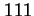 และที่เวลา  เกิดความเสียหายที่โมดูล 1 ระบบจะเปลี่ยนเป็นสถานะ 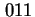 ซึ่งการเปลี่ยนสถานะจะถูกกำหนดโดยความน่าจะเป็นที่ระบบจะเกิดความเสียหาย, การครอบคลุมของความเสียหาย, และความน่าจะเป็นของการซ่อมบำรุง
เรานิยามการเปลี่ยนสถานะของระบบจากสมมุติฐานดังต่อไปนี้
เกิดความเสียหายที่โมดูล 1 ระบบจะเปลี่ยนเป็นสถานะ 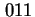 ซึ่งการเปลี่ยนสถานะจะถูกกำหนดโดยความน่าจะเป็นที่ระบบจะเกิดความเสียหาย, การครอบคลุมของความเสียหาย, และความน่าจะเป็นของการซ่อมบำรุง
เรานิยามการเปลี่ยนสถานะของระบบจากสมมุติฐานดังต่อไปนี้
- ระบบไม่คำนึงถึงการซ่อมโมดูล
ถ้าโมดูลเสียหายจะไม่สามารถกลับมาใช้งานได้อีก
- มีเพียงหนึ่งโมดูลที่เสียหายได้ ณ.เวลาใดๆ
จากสมมุติฐานขั้นต้นระบบ TMR จะไม่สามารถเปลี่ยนแปลงสถานะจาก ไปยังสถานะเสียหายได้โดยตรง เนื่องจากมีโมดูลเสียหายได้เพียงครั้งละหนึ่งโมดูล การเสียหายหนึ่งโมดูลไม่สามารถทำให้ระบบล้มเหลวได้ทันที สมมุติให้ระบบเริ่มทำงานที่สถานะ
แผนภาพสถานะของระบบ TMR แสดงในรูป 12.2 ระบบเริ่มจากสถานะ เมื่อเกิดเหตุการณ์หนึ่งโมดูลเสีย ระบบจะเปลี่ยนสถานะไปเป็น , , และ ขึ้นอยู่กับว่าโมดูล 1, 2 หรือ 3 เสียตามลำดับ ถ้าไม่เกิดการเสียของโมดูล ระบบจะอยู่ในสถานะเดิมซึ่งสามารถสังเกตุเห็นได้จากระบบในรูป 12.2 มีลักษณะคล้ายกับแผนภาพการเปลี่ยนแปลงสถานะของระบบดิจิตอล
Figure 12.2:
การเปลี่ยนแปลงสถานะของระบบ TMR
|
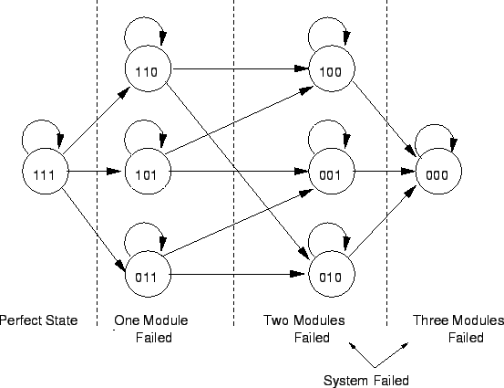
|
สถานะของระบบ TMR ในรูป 12.2 สามารถแบ่งออกเป็น 3 กลุ่มได้แก่
- ระบบสมบูรณ์ (Perfect State): ทุกโมดูลทำงานได้อย่างถูกต้อง
- ระบบเสียหนึ่งโมดูล (One-Failed State): ระบบมีหนึ่งโมดูลเสียหาย , , และ ซึ่งระบบยังทำงานได้
- ระบบล้มเหลว (System-Failed State): สถานะ , , , และ ซึ่งมีจำนวนโมดูลเสียเกินกว่าที่ระบบจะทำงานได้
การเปลี่ยนแปลงสถานะถูกกำหนดโดยค่าความน่าจะเป็นของการเปลี่ยนแปลงสถานะ (Transition Probability) ที่กำหนดความน่าจะเป็นที่จะเกิดการเปลี่ยนแปลงสถานะในช่วงเวลาที่กำหนด ในกรณีของระบบ TMR การเปลี่ยนแปลงสถานะของแผนภาพในรูป 12.2 เกิดจากความน่าจะเป็นของการเสียหายของโมดูล ถ้าเราสมมุติให้โมดูลเป็นไปตามกฎการเสียแบบ Exponential โดยมีอัตราการเสียหายคงที่เท่ากับ  ความน่าจะเป็นที่ระบบจะเสียหายที่เวลา
ความน่าจะเป็นที่ระบบจะเสียหายที่เวลา  โดยระบบทำงานอย่างถูกต้องที่เวลา จะเท่ากับ
โดยระบบทำงานอย่างถูกต้องที่เวลา จะเท่ากับ
ค่า Exponential สามารถขยายได้เป็นอนุกรมดังนี้
ดังนั้นเราจะได้
| 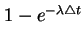 |
 |
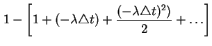 |
(12.3) |
| |
|
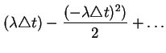 |
(12.4) |
สำหรับค่า  ค่าน้อยๆ เราจะได้
ค่าน้อยๆ เราจะได้
 |
(12.5) |
หรืออีกนัยหนึ่งคือโมดูลจะเสียในช่วงเวลา มีค่าประมาณเท่ากับ
 จากคุณสมบัติดังกล่าวเราสามารถแสดงค่าความน่าจะเป็นในการเปลี่ยนแปลงสถานะของระบบ TMR ได้แสดงในรูป 12.3 ซึ่งรูปดังกล่าวแสดงแผนภาพสถานะของระบบ TMR ที่สมบูรณ์ ซึ่งประกอบด้วยสถานะ, การเปลี่ยนสถานะ, และความน่าจะเป็นการเปลี่ยนแปลงสถานะ อย่างไรก็ตามเราสามารถลดทอนสถานะของระบบ TMR ลงได้ จากที่ได้กล่าวมาแล้ว สถานะของระบบ TMR สามารถแบ่งออกได้เป็นสามกลุ่ม ได้แก่ ระบบสมบูรณ์, ระบบเสียหนึ่งโมดูล, และระบบล้มเหลว จากสถานะสามกลุ่ม เราสามารถรวมสถานะเข้าด้วยกันในการลดทอน
จากคุณสมบัติดังกล่าวเราสามารถแสดงค่าความน่าจะเป็นในการเปลี่ยนแปลงสถานะของระบบ TMR ได้แสดงในรูป 12.3 ซึ่งรูปดังกล่าวแสดงแผนภาพสถานะของระบบ TMR ที่สมบูรณ์ ซึ่งประกอบด้วยสถานะ, การเปลี่ยนสถานะ, และความน่าจะเป็นการเปลี่ยนแปลงสถานะ อย่างไรก็ตามเราสามารถลดทอนสถานะของระบบ TMR ลงได้ จากที่ได้กล่าวมาแล้ว สถานะของระบบ TMR สามารถแบ่งออกได้เป็นสามกลุ่ม ได้แก่ ระบบสมบูรณ์, ระบบเสียหนึ่งโมดูล, และระบบล้มเหลว จากสถานะสามกลุ่ม เราสามารถรวมสถานะเข้าด้วยกันในการลดทอน
Figure 12.3:
แผนภาพแสดงการเปลี่ยนแปลงสถานะของระบบ TMR แสดงความน่าจะเป็นในการเปลี่ยนแปลงสถานะ
|
|
สมมุติให้สถานะ 3 เป็นสถานะของระบบ TMR ที่ทุกโมดูลทำงานอย่างสมบูรณ์ ทุกโมดูลทำงานได้หมด, และสถานะ 2 เป็นสถานะของระบบที่ยังทำงานได้อยู่ แต่มีเสียหนึ่งโมดูล, และสถานะ F เป็นสถานะของระบบล้มเหลว โดยที่มีโมดูลเสียมากกว่า 2 โมดูล จากสถานะสามกลุ่ม จากการนิยามดังกล่าวจะได้แผนภาพสถานะลดทอนของระบบ TMR แสดงในรูป 12.4
Figure 12.4:
การเปลี่ยนแปลงสถานะของระบบ TMR โดยจำนวนสถานะน้อยที่สุด สถานะประกอบด้วย-ระบบสมบูรณ์, ระบบเสียหนึ่งโมดูล, และระบบล้มเหลว
|
|
ความน่าจะเป็นของการเปลี่ยนแปลงสถานะในรูป 12.4 ได้จากความน่าจะเป็นในการเสียหายของหลายโมดูล ตัวอย่างเช่น ความน่าจะเป็นของการเปลี่ยนจากสถานะ 3 เป็นสถานะ 2 ขึ้นอยู่กับความน่าจะเป็นที่หนึ่งในสามโมดูลจะเสีย ซึ่งมีค่าเท่ากับ
 เช่นเดียวกัน ความน่าจะเป็นของการเปลี่ยนจากสถานะ 2 เป็นสถานะ F ขึ้นอยู่กับความน่าจะเป็นที่หนึ่งในสองโมดูลจะเสีย ซึ่งมีค่าเท่ากับ
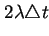
สมการของการจำลองมาร์คอฟของระบบ TMR สามารถทำได้ง่ายจากรูป 12.4 ซึ่งเราต้องการหาความน่าจะเป็นของระบบว่า จะอยู่ในสถานะ
เช่นเดียวกัน ความน่าจะเป็นของการเปลี่ยนจากสถานะ 2 เป็นสถานะ F ขึ้นอยู่กับความน่าจะเป็นที่หนึ่งในสองโมดูลจะเสีย ซึ่งมีค่าเท่ากับ
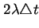
สมการของการจำลองมาร์คอฟของระบบ TMR สามารถทำได้ง่ายจากรูป 12.4 ซึ่งเราต้องการหาความน่าจะเป็นของระบบว่า จะอยู่ในสถานะ  ที่เวลา
ความน่าจะเป็นของระบบดังกล่าวขึ้นอยู่กับความน่าจะเป็นที่ระบบจะอยู่ในสถานะที่สามารถเปลี่ยนมาเป็นสถานะ ได้ และความน่าจะเป็นในการเปลี่ยนสถานะเกิดขึ้น ตัวอย่างเช่น ความน่าจะเป็นที่ระบบ TMR จะอยู่ในสถานะ
ที่เวลา
ความน่าจะเป็นของระบบดังกล่าวขึ้นอยู่กับความน่าจะเป็นที่ระบบจะอยู่ในสถานะที่สามารถเปลี่ยนมาเป็นสถานะ ได้ และความน่าจะเป็นในการเปลี่ยนสถานะเกิดขึ้น ตัวอย่างเช่น ความน่าจะเป็นที่ระบบ TMR จะอยู่ในสถานะ  ที่เวลา
ขึ้นอยู่กับความน่าจะเป็นที่ระบบ TMR จะอยู่ในสถานะ ที่เวลา และความน่าจะเป็นในการเปลี่ยนสถานะจากสถานะ กลับมายังสถานะ
ในรูปของสมการทางคณิตศาสตร์เราจะได้
ที่เวลา
ขึ้นอยู่กับความน่าจะเป็นที่ระบบ TMR จะอยู่ในสถานะ ที่เวลา และความน่าจะเป็นในการเปลี่ยนสถานะจากสถานะ กลับมายังสถานะ
ในรูปของสมการทางคณิตศาสตร์เราจะได้
เมื่อ 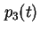 เป็นความน่าจะเป็นของระบบที่จะอยู่ในสถานะ ที่เวลา และ
 เป็นความน่าจะเป็นของระบบที่จะอยู่ในสถานะ
เป็นความน่าจะเป็นของระบบที่จะอยู่ในสถานะ  ที่เวลา
ด้วยวิธีเดียวกันเราสามารถหาสมการของสองสถานะที่เหลือได้ดังนี้
ที่เวลา
ด้วยวิธีเดียวกันเราสามารถหาสมการของสองสถานะที่เหลือได้ดังนี้
โดยสมมุติให้ระบบยังคงอยู่ในสถานะล้มเหลว ถ้าระบบเข้ามายังสถานะล้มเหลว โดย
 เป็นความน่าจะเป็นของระบบที่จะอยู่ในสถานะ 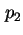 ที่เวลา
และ 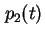 เป็นความน่าจะเป็นของระบบที่จะอยู่ในสถานะ
เป็นความน่าจะเป็นของระบบที่จะอยู่ในสถานะ 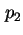 ที่เวลา
และ 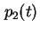 เป็นความน่าจะเป็นของระบบที่จะอยู่ในสถานะ  ที่เวลา เช่นเดียวกัน
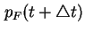 เป็นความน่าจะเป็นของระบบที่จะอยู่ในสถานะ 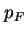 ที่เวลา
และ
ที่เวลา เช่นเดียวกัน
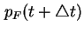 เป็นความน่าจะเป็นของระบบที่จะอยู่ในสถานะ 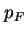 ที่เวลา
และ  เป็นความน่าจะเป็นของระบบที่จะอยู่ในสถานะ
เป็นความน่าจะเป็นของระบบที่จะอยู่ในสถานะ  ที่เวลา
สมการของแบบจำลองมาร์คอฟของระบบ TMR สามารถเขียนอยู่ในรูปของเมตริกซ์ได้ดังต่อไปนี้
ที่เวลา
สมการของแบบจำลองมาร์คอฟของระบบ TMR สามารถเขียนอยู่ในรูปของเมตริกซ์ได้ดังต่อไปนี้
เมตริกซ์ดังกล่าวสามารถเขียนเป็นสัญญลักษณ์ย่อเท่ากับ
โดยที่
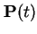 คือเวกเตอร์ความน่าจะเป็นของสถานะที่เวลา และ
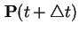 คือเวกเตอร์ความน่าจะเป็นของสถานะที่เวลา
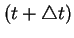  การหาค่าคำตอบของการจำลองมาร์คอฟสามารถทำโดยใช้สมการดิฟเฟอร์เร็น โดยสมมุติค่าเวกเตอร์เริ่มต้น 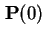
ค่า
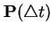 สามารถคำนวณได้จาก
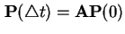 เช่นเดียวกัน เวกเตอร์ความน่าจะเป็นสถานะที่เวลา 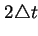 สามารถคำนวณได้จาก
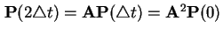
ถ้าเขียนในรูปแบบทั่วไปจะได้
การหาค่าคำตอบของการจำลองมาร์คอฟสามารถทำโดยใช้สมการดิฟเฟอร์เร็น โดยสมมุติค่าเวกเตอร์เริ่มต้น 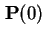
ค่า
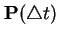 สามารถคำนวณได้จาก
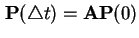 เช่นเดียวกัน เวกเตอร์ความน่าจะเป็นสถานะที่เวลา 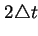 สามารถคำนวณได้จาก
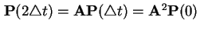
ถ้าเขียนในรูปแบบทั่วไปจะได้
ความน่าจะเป็นที่ระบบจะล้มเหลวขึ้นอยู่กับความน่าจะเป็นที่สถานะของระบบจะตกอยู่ที่สถานะ ในระบบ TMR ความน่าจะเป็น ที่ระบบจะล้มเหลว ค่าความน่าเชื่อถือของระบบ TMR สามารถเขียนได้เป็น
การจำลองมาร์คอฟแบบเวลาต่อเนื่องสามารถคำนวณหาความน่าจะเป็นได้ โดยการจัดรูปสมการให้อยู่ในรูปของดิฟเฟอร์เรนเชียล จากนั้นทำการลดเวลา 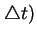 เข้าสู่ศูนย์ ได้ตามสมการดังนี้
| 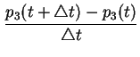 |
|
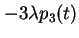 |
(12.16) |
| 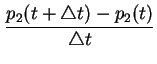 |
|
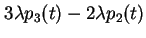 |
(12.17) |
 |
|
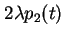 |
(12.18) |
เมื่อลดเวลา เข้าสู่ศูนย์ และจัดรูปสมการให้เหมาะสม จะได้สมการดิฟเฟอร์เรนเชียลดังต่อไปนี้
| 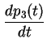 |
|
|
(12.19) |
| 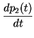 |
|
|
(12.20) |
 |
|
|
(12.21) |
สมการดิฟเฟอร์เรนเชียลขั้นต้นสามารถหาคำตอบได้หลายวิธี วิธีหนึ่งคือวิธีการแปลง Laplace โดยมีวิธีการต่อไปนี้
เมื่อ  เป็นการแปลง Laplace ของ ,
เป็นการแปลง Laplace ของ ,  เป็นการแปลง Laplace ของ ,
เป็นการแปลง Laplace ของ ,  เป็นการแปลง Laplace ของ , เป็นค่าเริ่มต้นที่เวลา
เป็นการแปลง Laplace ของ , เป็นค่าเริ่มต้นที่เวลา  ของ , เป็นค่าเริ่มต้นที่เวลา ของ , เป็นค่าเริ่มต้นที่เวลา ของ , เนื่องจากเราสมมุติว่าทุกโมดูลทำงานปกติที่เวลา นั้นคือ , , และ
ของ , เป็นค่าเริ่มต้นที่เวลา ของ , เป็นค่าเริ่มต้นที่เวลา ของ , เนื่องจากเราสมมุติว่าทุกโมดูลทำงานปกติที่เวลา นั้นคือ , , และ  จากการทำการแปลง Laplace เราจะได้
จากการทำการแปลง Laplace เราจะได้
ซึ่งสามารถแตกสมการให้อยู่ในรูปที่เหมาะสมได้เท่ากับ
ทำการแปลงกลับ Laplace จะได้ผลลัพธ์เท่ากับ
ค่าความน่าเชื่อถือของระบบ TMR คือความน่าเชื่อถือที่ระบบอยู่ในสถานะ 2 และสถานะ 3 ดังนั้นความน่าเชื่อถือของระบบจึงเท่ากับผลรวมของความน่าเชื่อถือในสถานะ 2 และสถานะ 3 มีค่าเท่ากับ
ซึ่งได้ผลลัพธ์เท่ากับวิธีแจกแจง (Combinatorial)
Next: แบบจำลองมาร์คอฟที่คำนึงถึงผลกระทบจากความคุ้มครองจากความเสียหาย
Up: แบบจำลองมาร์คอฟ
Previous: กล่าวนำ
Contents
Index
Vara Varavithya
2002-03-09
![\includegraphics[width=3.8in]{fig/markovtmr1.eps}](img815.png)
![\includegraphics[width=3.in]{fig/ft6tmr.eps}](img718.png)
![\includegraphics[width=5.0in]{fig/markovtmr3.eps}](img814.png)